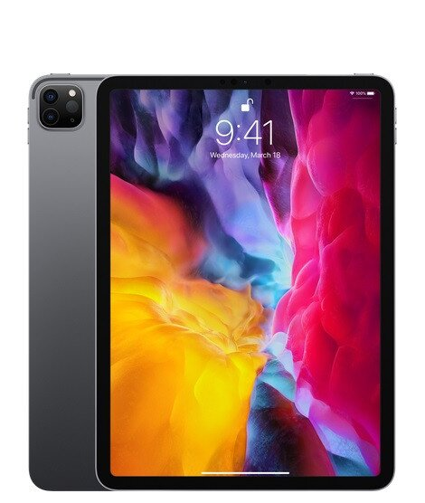
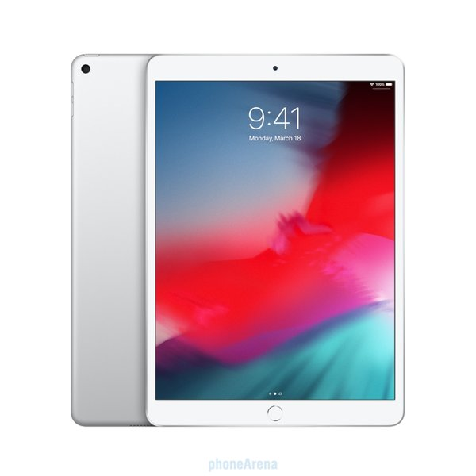
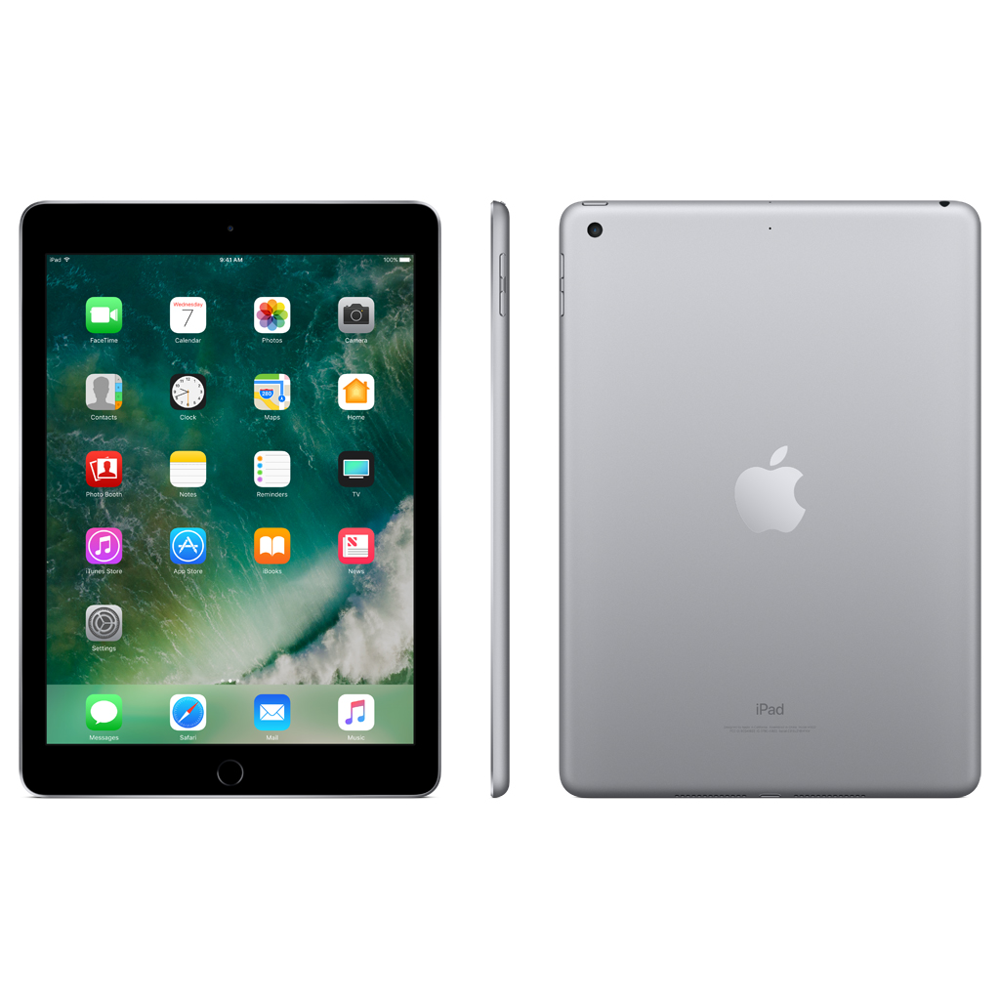
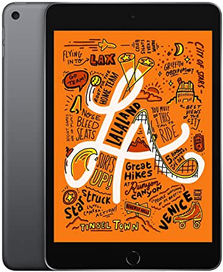

L'iPad Pro 12,9" (2020) est assurément une excellente tablette, peut-être même la meilleure sur le marché. Il s'agit d'un modèle parfaitement complet, qui se permet même quelques améliorations en photo.Il est dotée d’un écran Retina bord à bord de 11 pouces d’une résolution de 2388 × 1668 pixels.
La tablette fonctionne avec un processeur ARM A12Z Bionic accompagné de 5,56 Go de mémoire RAM et intègre entre 128 Go et 1 To de stockage interne total selon les versions. Elle est dépourvue de lecteur de carte, mais il est possible de connecter un périphérique de stockage au port USB C.
Cet iPad est équipé d’un système de reconnaissance faciale, de connexions Wi-Fi 6, Bluetooth 5 avec NFC et d’un double capteur photo arrière (objectifs grand angle 12 Mpixels et ultra grand angle 10 Mpixels) ; elle peut filmer en ultra haute définition 4K..

L'iPad Air 2019 est doté d’un écran Retina de 10,5 pouces d’une résolution de 2224 × 1668 pixel et sun processeur A12 Bionic, cette tablette fonctionne avec le système d’exploitation iOS 12.2 et intègre 64 Go de mémoire interne (sans lecteur de carte). Une version 256 Go est disponible (170 € plus chère), ainsi qu’une version Cellular (140 € plus chère). Elle possède aussi un lecteur d’empreinte digitale, des connexions Wi-Fi AC et Bluetooth 5 sans NFC ainsi que deux appareils photo d’une résolution de 7,2 et 8 Mpixels.Malgré un design qui a clairement fait son temps, ce nouvel iPad Air s'en sort plutôt bien. Habile dans toutes les tâches sur lesquelles il a été testé
L'ipad(2019) possède un écran Retina de 10,2 pouces d’une résolution de 2160 × 1620 pixels.a tablette fonctionne avec le système d’exploitation iOS 13, un processeur A10 Fusion et 128 Go de mémoire interne (mais toujours pas de lecteur de carte mémoire). Une version 32 Go est disponible (– 100 €), ainsi qu’une version Cellular (+ 140 €)La tablette possède une batterie de 32,4 Wh, un lecteur d’empreinte digitale, des connexions Wi-Fi AC et Bluetooth 4.2 sans NFC ainsi que deux appareils photo d’une résolution de 1,3 et 8 Mpixels.L'ipad est une bonne tablette sans etre trop innovante.L'iPad mini (2019)Apple mise sur le processeur A12 Bionic et l’écran Retina de 7,9 pouces (2048 × 1536 pixels) pour rester le leader des tablettes de petite taille et fonctionne avec le système d’exploitation iOS 12.2 et possède 64 Go de mémoire interne sans lecteur de carte. Une version 256 Go est disponible (+170 €), ainsi qu’une version Cellular (+140 €). La tablette possède un lecteur d’empreinte digitale, des connexions Wi-Fi AC et Bluetooth 5 sans NFC ainsi que deux appareils photo d’une résolution de 7,2 et 8 Mpixels.Elle reste la tablette de moins de 8 pouces la plus performante du marché et se montre diablement efficace le sentiment que nous éprouvons envers cet iPad Mini est mitigé car cela est encore insuffisant.